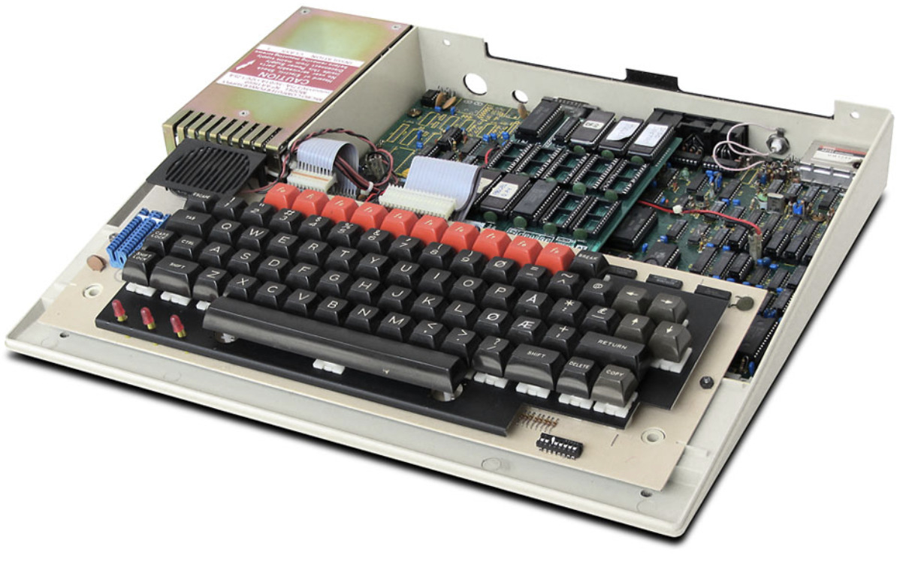

Geschiedenis
Eben Upton, medeoprichter van de Raspberry Pi, groeide op met de BBC Micro, een door Cambridge ontworpen computer die populair was in de programmeerwereld van de jaren 80. In deze periode waren zowel de BBC Micro als de Sinclair Spectrum enorm populair onder beginnende programmeurs en leerden zij een hele generatie computerhobbyisten in het Verenigd Koninkrijk hoe ze moesten programmeren. De BBC Micro was wat Eben Uptons liefde voor programmeren aanwakkerde en hem inspireerde tot het idee van betaalbare computers voor jongeren.

(BBC Micro) — Programmeerbare computer uit de jaren 80
Er waren bepaalde eisen die ze wilden opnemen in het ontwerp van de Raspberry Pi. Het team, dat onder andere bestond uit twee professoren van de afdeling Computer Science and Technology van de Universiteit van Cambridge — Robert Mullins en Alan Mycroft — samen met andere Cambridge—computerwetenschappers, ingenieurs en ondernemers, stelde vier belangrijke ontwerpvereisten op:
- Het moest programmeerbare hardware zijn
- Het moest leuk zijn om te gebruiken
- Het moest betaalbaar zijn
- Het moest duurzaam en robuust zijn
In 2008 werd de Raspberry Pi Foundation opgericht met als doel een goedkope computer te ontwikkelen die kinderen zou helpen interesse te krijgen in de wereld van programmeren. Dit gebeurde nadat men een duidelijke daling zag in prestaties en interesse in informatica bij het Computer Laboratory van de Universiteit van Cambridge. De stichting liet zich sterk inspireren door de BBC—microcomputer uit de vroege jaren 80, die was ontworpen om de computergeletterdheid op scholen te verbeteren. De allereerste versies van de Raspberry Pi leken zelfs op een kleine USB—stick.
In augustus 2011 was het apparaat in staat om een Debian—laptopomgeving te draaien met 1080p—afspeelkwaliteit. Bij de eerste aankondiging werden er meer dan 100.000 pre—orders gemeld. Na de lancering van de Raspberry Pi Model B verscheen de Model B Revision 2.0, die het dubbele RAM had van de vorige versie, namelijk 512 MB.
Sinds de introductie wordt de Raspberry Pi breed ingezet in onder andere:
- Onderwijs → Voor het aanleren van programmeren en hardwareconcepten
- DIY—projecten → Huisautomatisering, robotica en retro—gaming
- Industrie & IoT → Voor slimme apparaten, automatisering en datalogging
- Mediacenters → Voor platforms zoals Kodi voor thuisentertainment
Het verhaal van de Raspberry Pi door de oprichter zelf: